Kruen
Android and iOS App Design & Development
We create modern and user-friendly applications that combine quality design with perfect functionality.
01 · Flagship App
SwRGlobal Radio
PRO is a one-time purchase Pay once, keep it forever - no subscription.
Tune into real radio receivers around the world - live, from your phone. SwR connects to hundreds of receivers across five clients - KiwiSDR/Web-888, OpenWebRX, UberSDR, FM-DX and AirSpy - and turns the ionosphere into your personal listening room.
Also on Apple Watch: SwR Watch - a separate, standalone app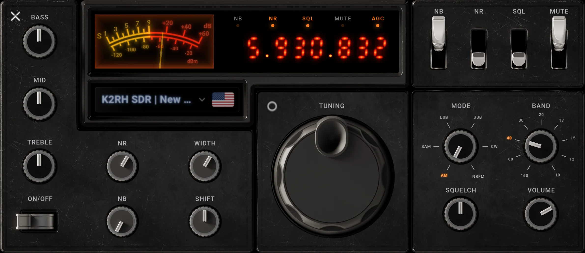
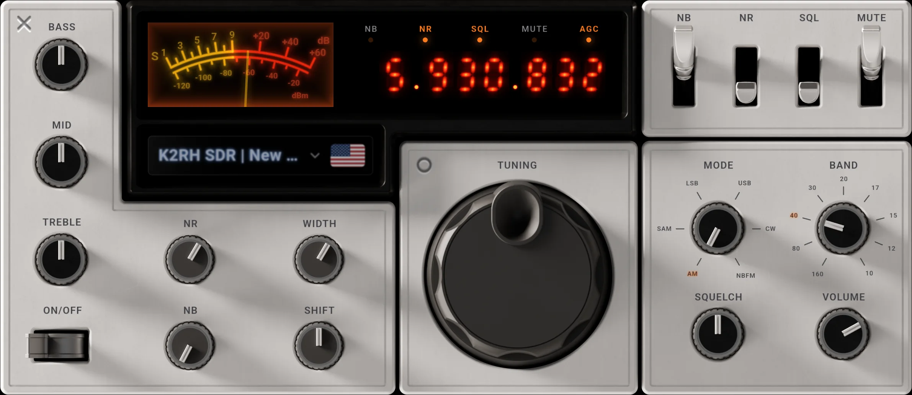
Panel One - one hand-crafted radio skin, two finishes. Drag the divider to switch. Every knob, switch and needle actually works.
Not just a receiver.
A signal instrument.
Live spectrum & waterfall
Watch the whole band breathe in real time. A glowing frequency display, an authentic S-meter and a full waterfall view make hunting for signals feel like the real thing.
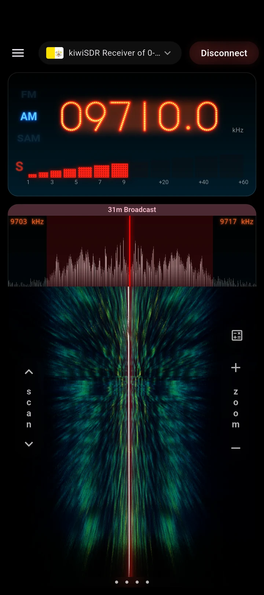
Different types of waterfalls & spectrums
Switch the waterfall into a rolling 3D landscape or a hypnotic 4D warp. Radio spectrum has never looked this good on a phone.
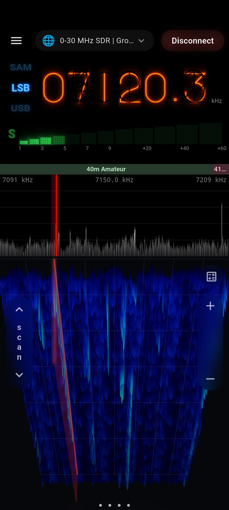
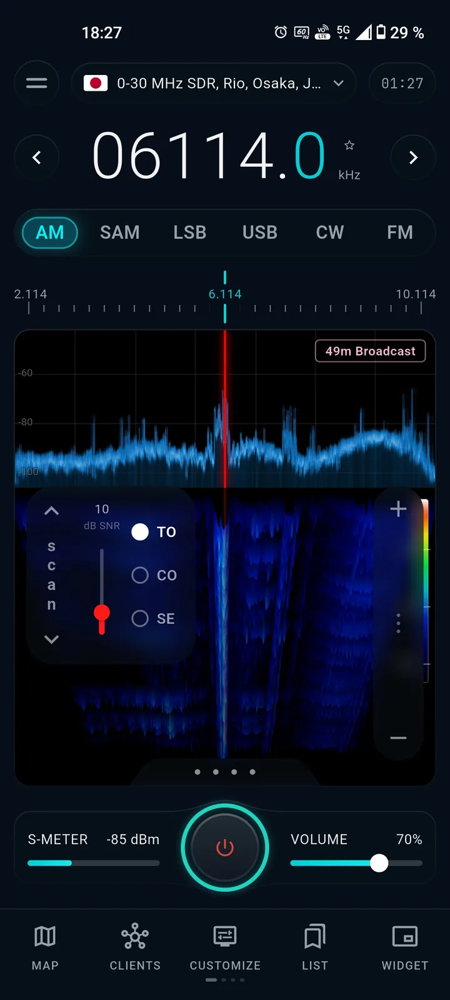
A worldwide receiver network
Find your receiver anywhere in the world and choose from 5 clients: KiwiSDR/Web-888, OpenWebRX, UberSDR, FM-DX and AirSpy. Watch where the sun is shining and where it's already night.
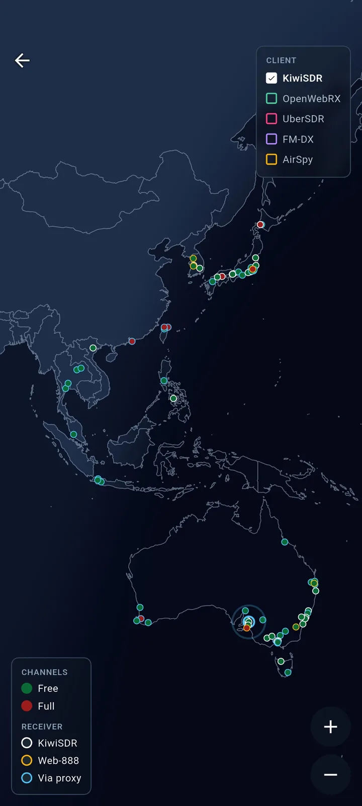
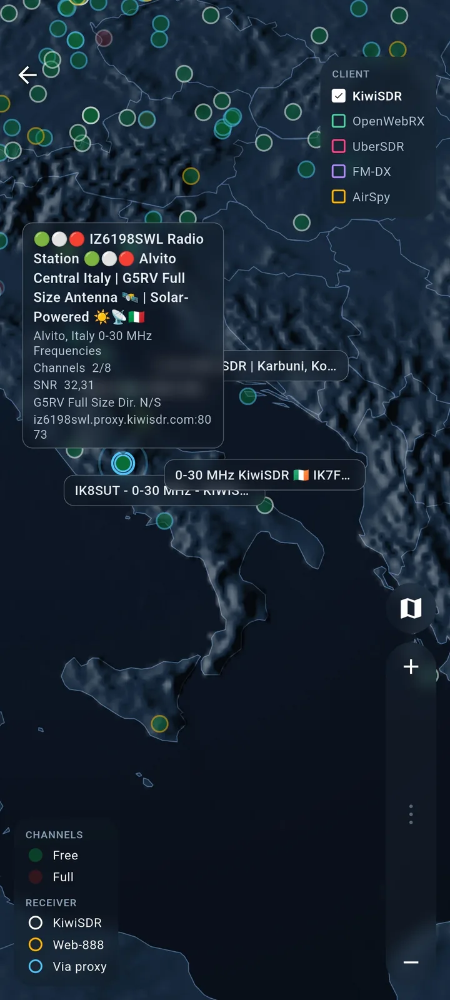
Shape the sound
A built-in equalizer, adjustable bandwidth, noise reduction and smart scanning. Fine-tune every station until it sounds exactly right.
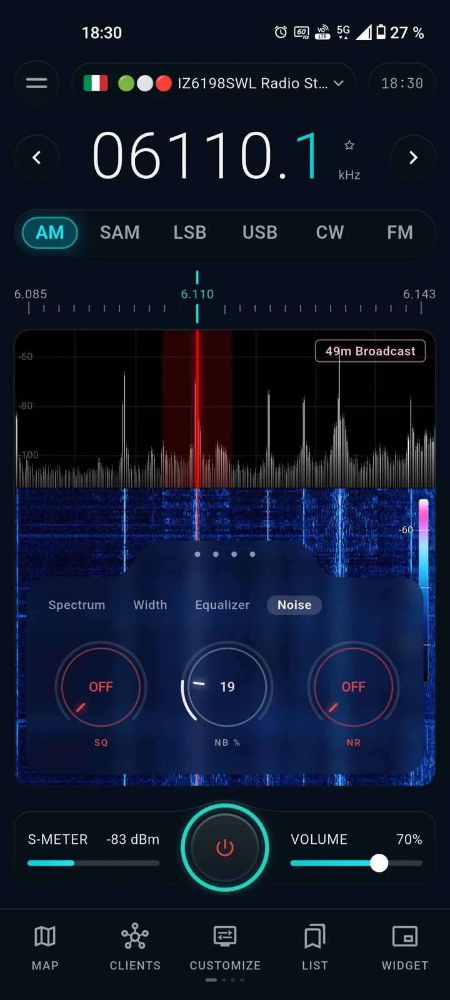
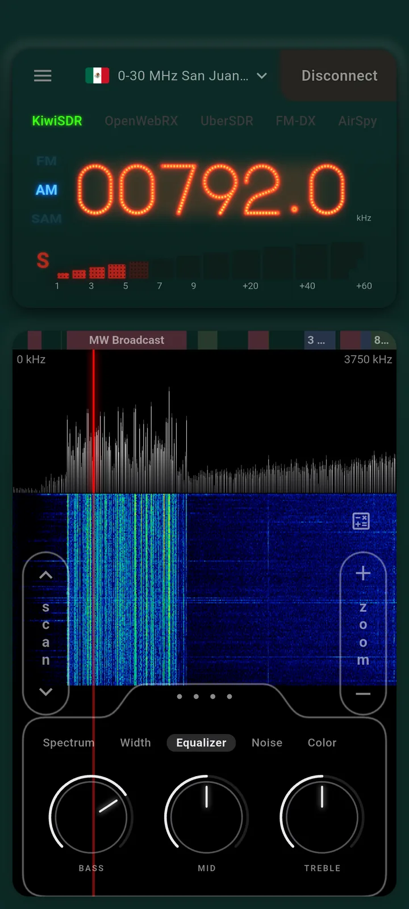
Pixel mode
A retro monochrome skin that turns the whole receiver into a blocky pixel display. Frequency, spectrum and waterfall - reimagined as glowing dot-matrix art.
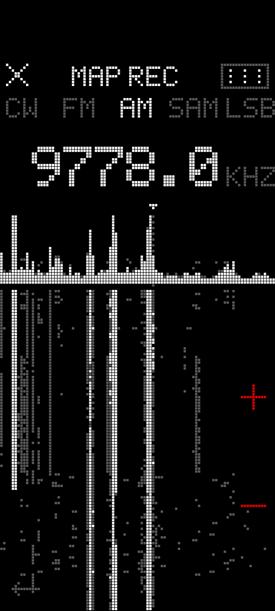
FM-DX
FM broadcast radio, right on your phone (87.5-108 MHz). Tuning by hand is fast and lands right on frequency, so drag the dial to hunt for stations.
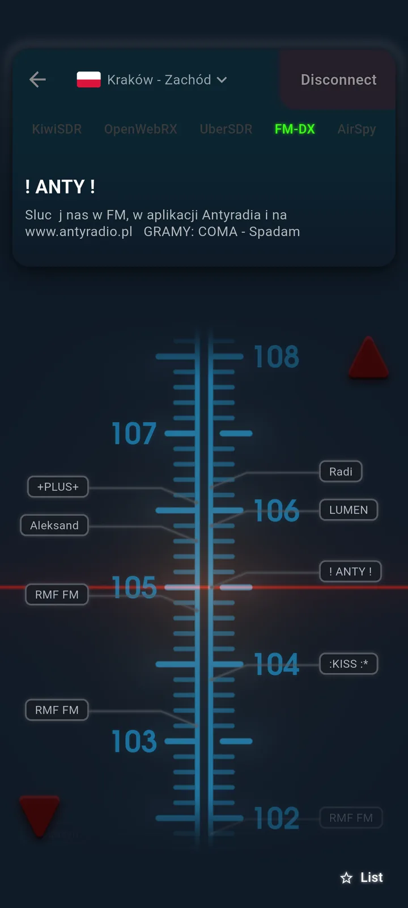
Widgets
Two types for KiwiSDR and FM-DX. Browse the web or do anything else on your phone while the radio keeps playing - and retune any time straight from the widget.
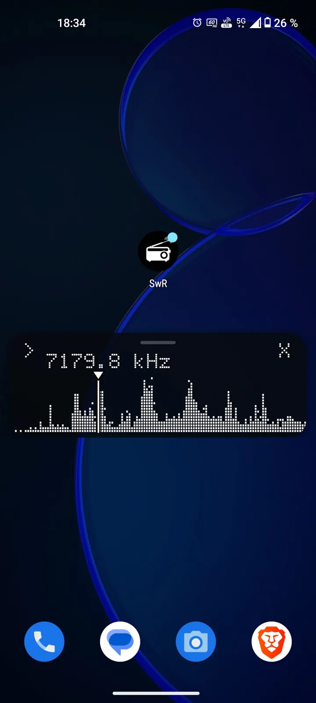
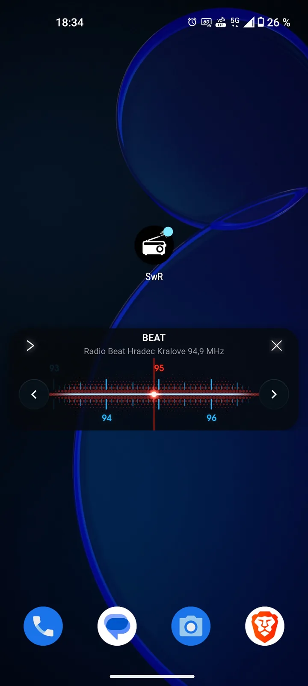
Your own USB dongle
Plug in an SDR dongle and listen completely offline - no internet, no server, no limits. Just your antenna and the whole band.
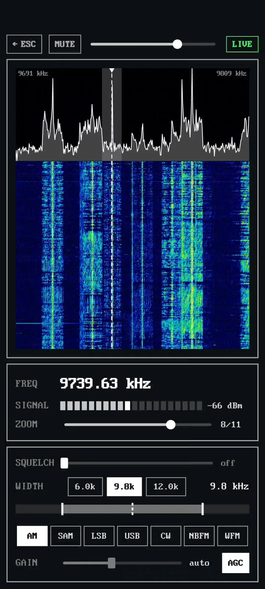
Satellite tracking and listening
Catch transmissions from orbit right on your phone. Live satellite positions, real passes over your head - and every receiver that can hear them.
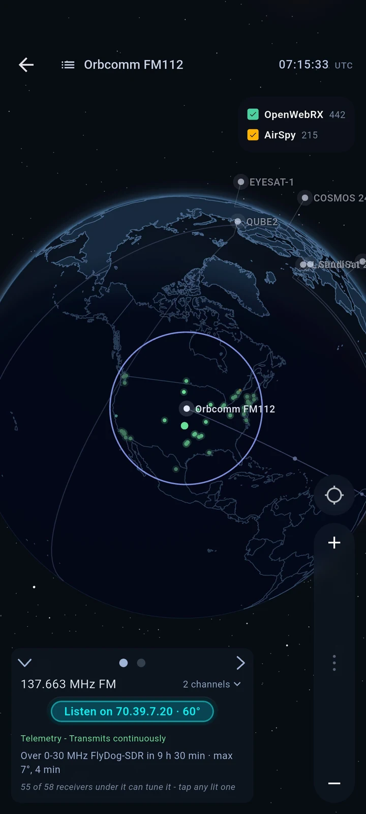
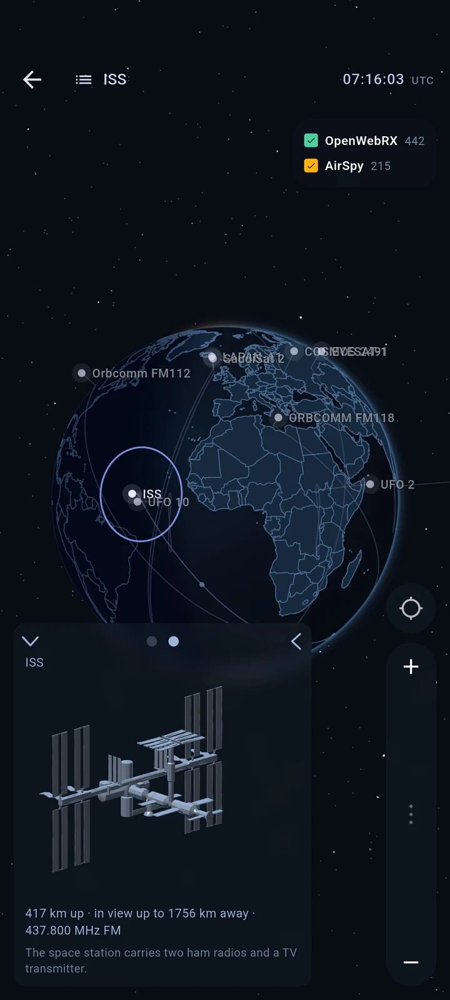
Plane tracking and listening
Follow air traffic anywhere in the world. Live aircraft on the map with flight, type, altitude and speed - plus the nearest airport and its tower frequency, so you can tune in and hear the pilots.
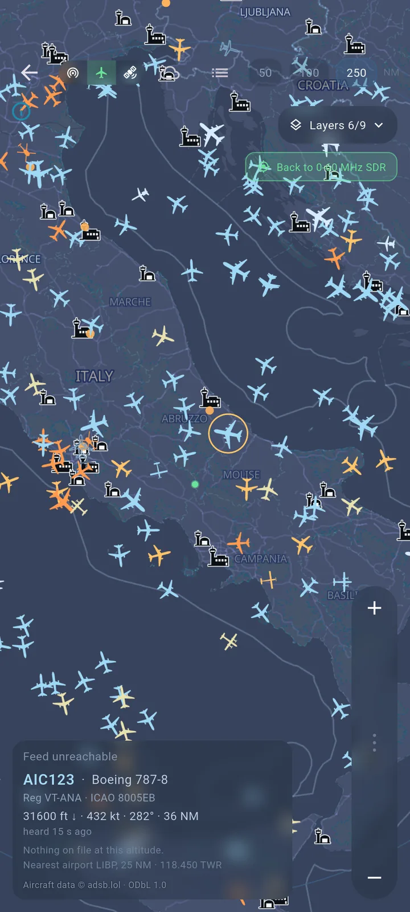
Free version
Enjoy listening to stations around the world completely free and without ads.
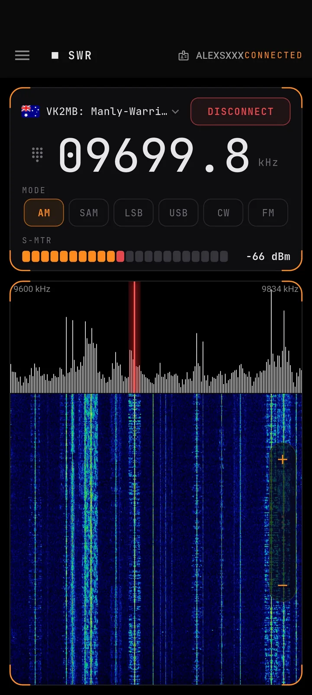
Free or PRO.
| Feature | Free | PROone-time purchase |
|---|---|---|
| Receiver clientsKiwiSDR/Web-888, OpenWebRX, UberSDR, FM-DX, AirSpy | 1KiwiSDR/Web-888 | 5all clients |
| Listening timeHow long you can stay tuned in | 15 min | Unlimited |
| No ads | Included | Included |
| Zero data collection | Included | Included |
| Render RadioHand-crafted skins with working knobs and needles | Not included | Included |
| Pixel graphicsRetro dot-matrix display mode | Not included | Included |
| Waterfall visuals | 1 | 4 |
| Spectrum visuals | 1 | 4 |
| Widgets for KiwiSDR/Web-888 | Not included | Included |
| Widgets for FM-DX | Not included | Included |
| Background playback | Not included | Included |
| Smart scanning | Not included | Included |
| Reception & sound tuningEqualizer, bandwidth, noise reduction | Not included | Included |
| Custom colours | Not included | Included |
| Smart receiver detectionFinds the receiver's location and the band it is tuned to | Included | Included |
| Day / night map | Not included | Included |
| USB dongleYour own antenna, fully offline | Not included | Included |
| SatellitesLive tracking and listening | Not included | Included |
| PlanesLive air traffic and tower frequencies | Not included | Included |
| Detailed mapsPowered by OpenFreeMap | Not included | Included |
One purchase unlocks everything - now and in the future. Pay once and PRO stays yours. Every new client, visual and feature we add later is included - no subscription, no ads, no extra payments.
02 · SwR family · Apple Watch
SwR WatchShortwave on your wrist
A real shortwave radio on your Apple Watch. SwR Watch connects to public KiwiSDR and Web-888 receivers around the world - tune them with the Digital Crown, watch the band and listen, right on your wrist. A standalone watch app: no iPhone, no account, no sign-up.
One-time purchase Pay once, keep it forever - no subscription.
AM, LSB, USB, CW and NBFM with adjustable bandwidth, volume and squelch. Audio keeps playing with your wrist down, and if a receiver drops you, SwR Watch reconnects or moves to the next best one. A separate app from SwR - Global Radio, with the same spectrum and waterfall look.
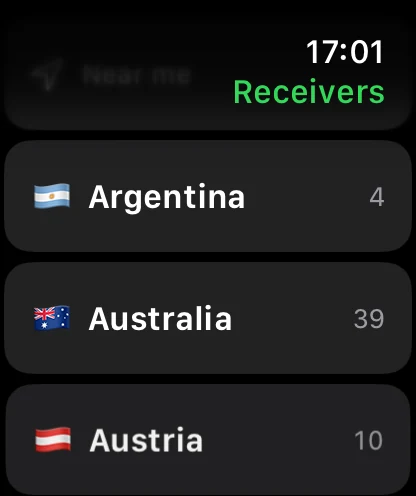
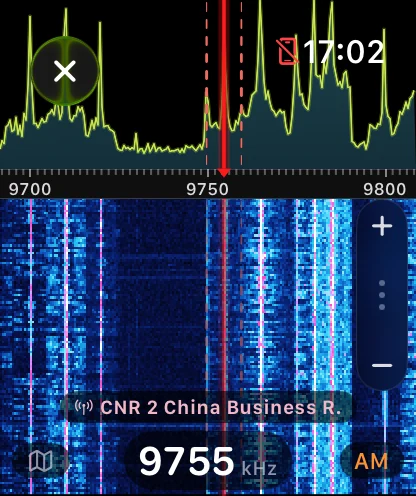
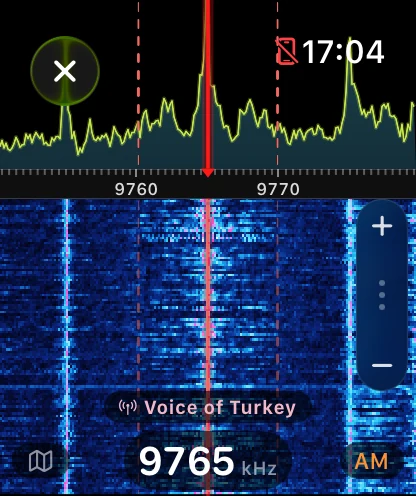
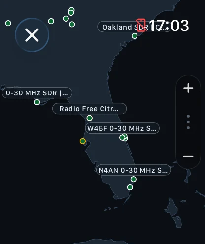
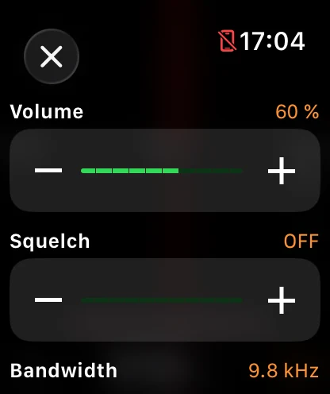
03 · New from Kruen
CmACrypto Market Analysis
Every coin traded on Binance gets a single score from 0 to 100 % - and the app shows you exactly where that number comes from. Fourteen metrics across market, price, supply, fundamentals, development, community and risk, each with its own weight, all one tap away.
A metric with no data is left out of the maths instead of being guessed, so "we don't know" never moves the score up or down. Prices come live from Binance, everything else is pre-computed and served from our own gateway. It is an orientation tool built from public data - not investment advice.
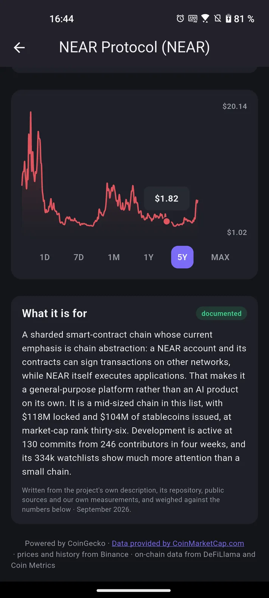
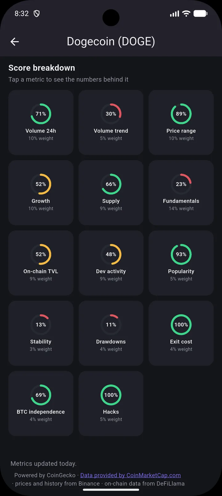
04 · New from Kruen
PBHPhone Battery Health
How much of its factory capacity has your battery actually lost? PBH reads the fuel gauge chip directly - charge counter, voltage, temperature - estimates the real full capacity in mAh and follows it over time.
Every reading stays on the phone - there is no account, no server and nothing to upload.
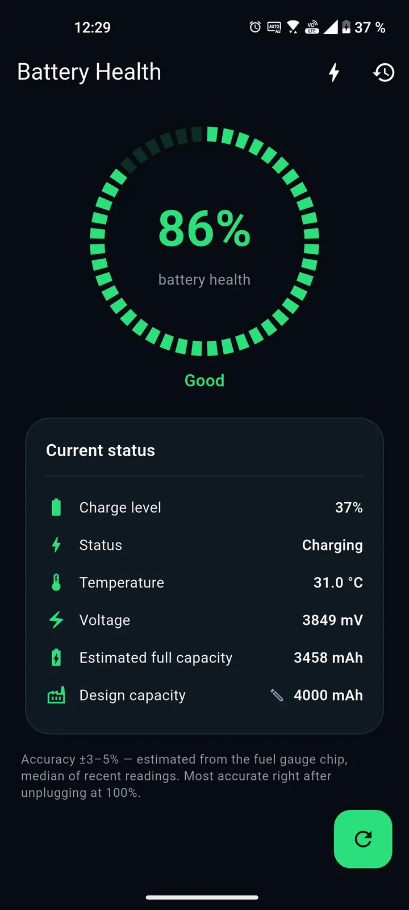
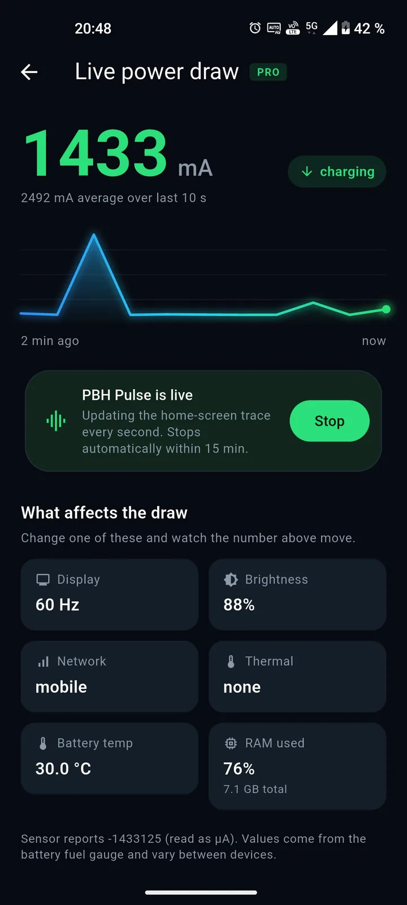
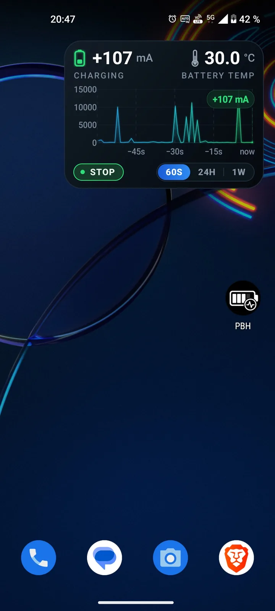
05 · Also by Kruen
CaFCrypto and Forex Widget
Crypto and forex - as clean, glanceable home-screen widgets. One look at your home screen and you know where the market stands.
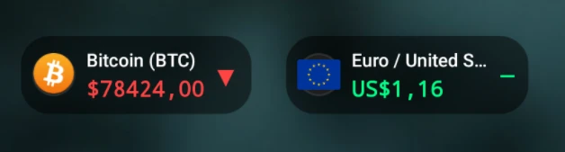
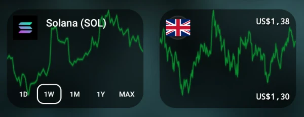
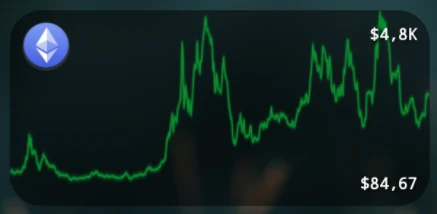
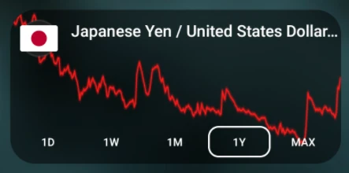
Made in the Czech Republic
Kruen is a small studio based in the Czech Republic. We bring European quality and precision to mobile app development - traditional engineering craft combined with modern technology.
Our commitment to clean, ethical development means no ads, no hidden fees, no additional payments. And above all: we do not collect any user data. No tracking, no analytics, no data harvesting. What you do with our apps stays with you.
- Security-first development
- Privacy-by-design architecture
- Ad-free user experience
- Zero data collection